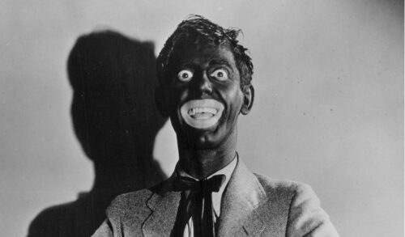
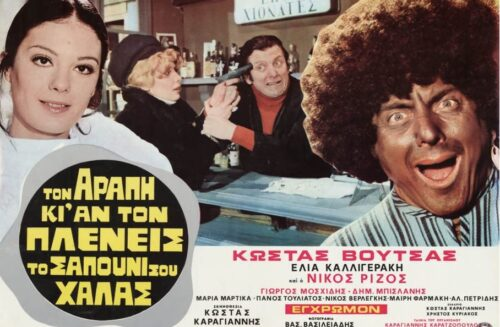

Scarlett O’Hara: Oh, Rhett, Rhett… I’m so sorry, I’m so sorry for everything.
Rhett Butler: My darling, you’re such a child. You think that by saying, “I’m sorry,” all the past can be corrected.

The classic film Gone with the Wind (1939), from which this dialogue comes, was only recently removed from the catalogue of a US streaming provider, because it glosses over oppression and slavery and does not reflect historical reality. The problem of distorted portrayals of certain characters, however, is not unique to US film history.1 Particularly problematic is the phenomenon of so-called blackface. The term originates in the USA and dates back to the 18th and 19th centuries. It describes white performers painting their faces black to portray a dark-skinned character on stage, and thereby demeaning that character. Not only was the appearance of Black people imitated, but also their speech, gestures and facial expressions, in grotesque ways.2

This phenomenon can also be found in several Greek comedies of the 1960s and 1970s. One example is the 1973 film “Τον αράπη κι αν τον πλένεις, το σαπούνι σου χαλάς”, produced by Kostas Karagiannis. In German the title is “So sehr du auch den Neger wäschst, du verschwendest nur Seife”, which in English is roughly “No matter how much you wash the Negro, you’re only wasting soap.” The title alone is clearly racist. Nevertheless, 111,554 tickets were sold between 1973 and 1974.3
The plot is simple. The protagonist, Adonis, played by Kostas Voutsas, falls head over heels for Roula, the sister of a respected captain who tries to prevent the relationship, since in his eyes Adonis cannot provide for her adequately. The wedding is off, until Adonis has a “brilliant idea”: earn some extra money as a servant. Since dark-skinned servants seem to be very fashionable at the time, the solution is obvious. With the help of his friend Vangelis, an actor who has some black shoe polish left over from his last role, he paints his face black. In the next scene, the audience sees him in a pyjama-like outfit at a party where he works as a servant and is popular with the guests for his exaggerated, openly racist stories about his homeland, the Congo. He tells these stories in an over-the-top Greek accent that could hardly be worse. When the prospective son-in-law of the employer tells his girlfriend that Adonis, now called Mohamed, is a “nice little fruit” and that he would like to know where her father bought this “fruit”, nobody is surprised. Then what must happen does happen: Roula and her brother are also invited to the party. Adonis panics briefly but is not recognised by his beloved. She desperately tries to leave him a message by phone, so he comes up with an idea that could not be more clichéd. With a magic spell, a vase misused as a drum and a series of indeterminate noises, he “conjures” himself to the phone by simply dialling the house’s other line and speaking to her from there. When she tells him about the servant’s magic, Adonis warns her to stay away from “the Black man”, which she does not question. A power cut then occurs during the party, and a painting is stolen. It does not take long for everyone to agree: “It must have been the Black man.” He sweats so much that the paint runs off his face and the lie is exposed. He is arrested but released relatively quickly, and in the end he solves the theft himself, wins back his beloved and even receives her brother’s consent.
The film is undoubtedly full of racist allusions, but it is by no means an isolated case. Numerous films of this kind were produced in the 1960s and 1970s, not only in Greece but worldwide. Dimitris Politakis, who writes for the Greek magazine LiFO, argues that films from this period must always be interpreted against the social conditions of their time and can therefore partly be excused.4 Kostas Maniatis, an author for the magazine Provocateur, shares this view. He asks whether people at the time were really racist, or whether they simply did not know that films like this can hurt groups of people, BPoC in particular.5
This argument may be supported by the education levels of the time. In 1971 the illiteracy rate in Greece was around 12 percent, and about 30% of the employed population had no primary school qualification.6 Moreover, the share of foreigners in Greece in 1970 was relatively small, at roughly one percent, so there was most likely little real contact with BPoC or other ethnic minorities.7 On the other hand, the Greek diaspora was quite present in Africa, especially in the 1950s. There was, for example, a Greek community in the Congo, where the film’s protagonist is supposedly from.
More decisive for understanding racism in this period, however, is the political situation. Since 1967 Greece had been under a dictatorship, the so-called “Regime of the Colonels”, which would keep the country “in plaster” until 1974. The junta also intervened heavily in culture, for example through censorship. Nationalist-patriotic content, or indeed racist content, generally passed the censors without problems. This is also the breeding ground from which the later xenophobic far right of “Golden Dawn” grew.
For some years, films like this have no longer been shown on Greek television. Yet a closer look at the Greek programme schedule quickly shows that, at least for those who produce entertainment shows, the humour of the 1970s still holds sway.
On 25 January 2019 the broadcaster Open Beyond aired “Ευτυχείτε!” (“Be happy!”), a show moderated by Katerina Kainourgiou. In its “Dilemmas” category it featured a comedy sketch that is only embarrassing to watch. A boy introduces his new girlfriend to his mother. The mother is rather unhappy with the girlfriend because she is dark-skinned. The scene would be racist enough on its own, but the fact that the actress playing the girlfriend is not actually dark-skinned, and that blackface was still being used in 2019, tops it off.8 This was by no means the show’s first scandal. Only a few weeks before this sketch aired, another segment was produced in which the participants mocked the masculinity of a Korean singer.9
Greek television, and with it large parts of Greek society, therefore still has a long way to go in the fight against racism and stereotypes. It is to be hoped that public debate, like the one that followed the blackface scandal of “Ευτυχείτε!”, together with the global outcry of the Black Lives Matter movement, will move us as a society one step forward. Not only Greece but the whole world must finally accept that the 21st century has no room for racism, and that it can no longer be tolerated!
Sources & notes
- Cf. Deutsche Welle (dw.com): “Vom Zeitgeist verweht? Kino, Klischees und Kritik”, DW.COM [online], https://www.dw.com/de/vom-zeitgeist-verweht-kino-klischees-und-kritik/g-53814572 [accessed 27.02.2021].↩
- Cf. “Endlich mal erklärt – Was ist ‘Blackfacing’?”, Deutschlandfunk, 26.06.2020 [online], https://www.deutschlandfunk.de/endlich-mal-erklaert-was-ist-blackfacing.691.de.html [accessed 27.02.2021].↩
- Cf. A Leopard Never Changes Its Spots (1973), IMDb, 22.11.2010 [online], https://www.imdb.com/title/tt0204836/ [accessed 27.02.2021].↩
- Cf. Politakis, Dimitris: “Συγκριτικά με τον άγριο μισογυνισμό, ο ρατσισμός στις παλιές ελληνικές ταινίες μοιάζει εντελώς της πλάκας”, LiFO.gr, 12.06.2020 [online], https://www.lifo.gr/stiles/sygkritika-me-ton-agrio-misogynismo-o-ratsismos-stis-palies-ellinikes-tainies-moiazei [accessed 27.02.2021].↩
- Cf. Maniatis, Kostas: “Ήταν οι ελληνικές ταινίες των 60s ρατσιστικές;”, Provocateur [online], https://provocateur.gr/prisma/13057/htan-oi-ellhnikes-tainies-twn-60s-ratsistikes [accessed 27.02.2021].↩
- Cf. Patiniotis, Nikitias: “Griechenland und Aktualisierung 2000”, in: Lenske, Werner / Pirigiotakis, Joannis / Lauterbach, Uwe (eds.), Internationales Handbuch der Berufsbildung, Vol. 9, Baden-Baden: Nomos, 2000.↩
- Cf. Greece Immigration Statistics 1960–2021, MacroTrends [online], https://www.macrotrends.net/countries/GRC/greece/immigration-statistics [accessed 27.02.2021].↩
- Cf. LubenTV: “Εκπομπή Καινούργιου: Το πιο αμήχανο blackface στην ιστορία της ελληνικής τιβι”, YouTube, 28.01.2019 [online], https://www.youtube.com/watch?v=C3DeW7_oOjw [accessed 27.02.2021].↩
- Cf. Kyriazis, Dimitris: “«Blackface»: Γιατί το να βάφεσαι για να υποδυθείς ένα μαύρο άτομο δεν είναι αθώο ούτε αστείο”, LiFO.gr, 07.02.2019 [online], https://www.lifo.gr/stiles/blackface-giati-na-bafesai-gia-na-ypodytheis-ena-mayro-atomo-den-einai-athoo-oyte-asteio [accessed 27.02.2021].↩